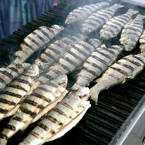

Recept za ribu na roštilju

Pečenje ribe je zabavan zadatak, prvenstveno zbog strukture ribljeg mesa. Za razliku od kopnenih životinja,
kod kojih su mišići raspoređeni u snopove, kod riba je mišićno tkivo raspoređeno u tankim slojevima koji idu
od kosti do kože, povezani vezivnim tkivom.
Tijekom pečenja se mišićna vlakna smanjuju, a vezivno tkivo se omekšava, što dovodi do raspadanja mesa (zato
npr. za rezanje pečenog ribljeg fileta nije potreban nož). Kao kraljevi roštilja moramo znati, da je
potrebno ribu ukloniti s roštilja čim je vezivno tkivo omekšalo i prije nego popusti. Kada se mišićno tkivo
zagrije, oslobađa vodu, koja ostaje u vezivnom tkivu, i kada popusti, gubimo vlagu i riba je suha.